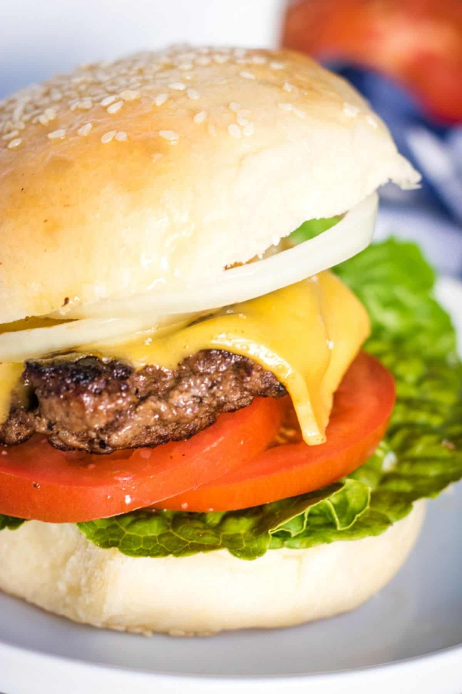

Homepage

This is a really really really good recipe, the second favorite if I had to decide between my favorite ones not only for the explosion of taste it has but because of the
quality and (personally) the fat it spreads when you squeeze it.
This recipe is a really easy one, most of you already know how to cook this dish because it's a traditional one (even more in America)
This is for a hamburger, if you want to make some fired chips just add them after the hamburger
The ingredients are the following:
- Beef
- Oil
- Seasoning
- Salt
- Pepper
- Garlic Powder
- Onion Powder
- Bread
- Sesame Buns
- Potato Bun
- Brioche (heaven forbid)
- Condiments (not all are required)
- Ketchup
- Mayonnaise
- Mustard
- Lettuce
- Tomato
- Onion
- Cheese (at your choice)
There are not many ingredients as you can see, so it should be easy to cook right?
Now let's go to the cooking part:
- First take a pan and add some oul to it
- Put the stove at medium fire and let it heat
- Once the stove it's heated, add the burger/s
- Let it cook for 3 minutes on each side, here is the time to add some chips if you want to
- Once it's cooked, take it out of the pan and put it on a plate
- You should put the bread cheese, tomato and lettuce all organized on that same plate, just for saving some time
- Once you got everything ready, put the condiments on the bread
- Put the burger on the bread
- Enjoy the hamburger
It's a really easy recipe, I hope you enjoy it as much as I do
Return to top